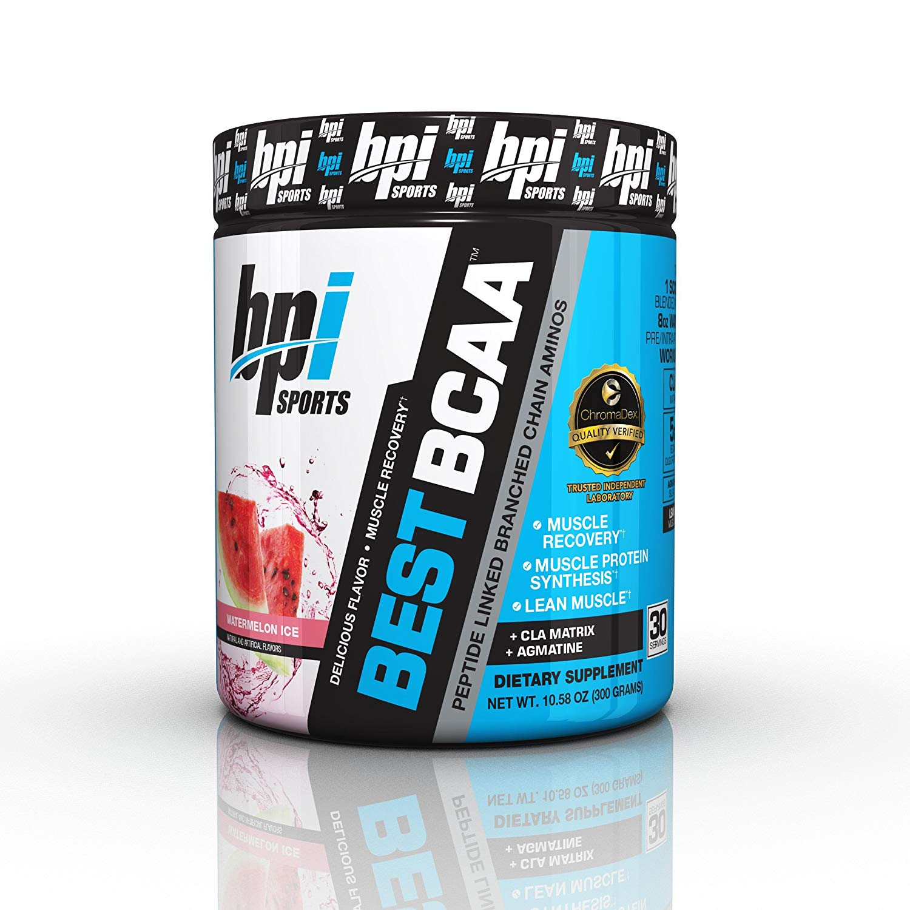

Brief Instruction
Creatine is a natural substance found in muscle cells. It helps muscles produce energy during heavy lifting and high-intensity exercise. Research has proven that taking creatine can help in gaining muscle, enhancing strength and improving exercise performance. Factors like meat intake, exercise, amount of muscle mass, and levels of hormones can affect creatine stores in your body. Roughly 95% of creatine is stored in your muscles in the form of phosphocreatine, and the rest can be found in your brain, kidneys, and liver.
How Does It Work?
Creatine increases your stores of phosphocreatine, a form of stored energy in cells, helping your body produce more of ATP, which is a high-energy molecule that acts as the body's energy currency. The more ATP you have in your body, the better you can perform during exercise. Creatine also alters several cellular processes that lead to increased muscle mass, strength, and recovery.
Benifits
- Lower blood sugar levels
- Improve muscle function
- Help treat non-alcoholic fatty liver disease
- Reduction in fatigue and dizziness
- Improve strength, power, and high-intensity exercise performance
Dosage
A recommended dose is about 20 grams per day, which are split into multiple servings during a short “loading” phase when you start taking the supplement. After this phase, a typical maintenance dose is 3–5 grams per day.
Creatine
Brief Instruction
Caffeine is a natural stimulant commonly found in tea, coffee, and cacao plants. It works by stimulating the brain and central nervous system, helping you to stay alert and preventing the tiredness. Caffeinated soft drinks hit the market in the late 1800s, and then comes the energy drinks. Nowadays, 80% of the world's population consumes caffeinated products each day, and this number goes up to 90% for adults in North America.
How Does It Work?
Once consumed, caffeine is absorbed into the bloodstream from the gut. From there, it is passed to the liver and broken down into different compounds that affect the function of different organs. Caffeine's main effect is on the brain. It helps you stay awake by connecting to adenosine receptors in the brain without activating them, blocking the effects of adenosine, which is a neurotransmitter that makes you feel tired.
Benifits
- Caffeine may improve mood and brain function
- It may boost metabolism and speed up weight Loss
- Caffeine may enhance exercise performance
- Protection against heart disease and type 2 diabetes
Dosage
The recommended and safe dose of caffeine for exercise is about 1.4–2.7 mg per pound (3–6 mg per kg) of body weight. Moreover, doses of 4 mg per pound (9 mg per kg) of body weight may cause sweating, tremors, dizziness, and vomiting.
Caffeine
Brief Instruction
Beta-alanine is a non-essential amino acid, which means it is not used by your body to directly synthesize proteins. Together with another amino acid histidine, it produces a chemical called carnosine. Carnosine is stored in your skeletal muscles, helping reduce lactic acid accumulation in your muscles during exercise and therefore improving athletic performance.
How Does It Work?
In your muscles, histidine levels are normally high and beta-alanine levels low, which limits the production of carnosine. Supplementing with beta-alanine has been shown to increase carnosine levels in muscles by 80%. While you are exercising, lactate is produced, which as a result increases the acidity in your muscles, blocking glucose breakdown and reduces muscles’ ability to contract. Carnosine can buffer this rise in acidity, hence helping improve athletic performance.
Benifits
- Increases time to exhaustion
- Benefits shorter-duration exercises
Dosage
The standard dosage of beta-alanine is 2–5 grams daily. Consuming beta-alanine with a meal can further increase carnosine levels.
Beta-Alanine

Brief Instruction
Citrulline is an amino acid that your body can naturally produce on its own. You can increase the citrulline level in your body by eating foods containing it or by taking supplements. Citrulline has important roles in the body, especially in the urea cycle, which helps your body to get rid of harmful compounds. Citrulline can also help widen your blood vessels and may play a role in muscle building.
How Does It Work?
One major way citrulline works is by increasing vasodilation--the widening of arteries or veins--which helps lower blood pressure and increase blood flow. After citrulline is consumed, some are converted to another amino acid called arginine. Arginine is converted into nitric oxides, which cause vasodilation of blood vessels. Moreover, although citrulline isn't an amino acid used directly to build proteins, research has shown that it can increase protein synthesis by stimulating an important signaling pathway involved in muscle building.
Benifits
- It may help your blood vessels widen
- It may reduce blood pressure
Dosage
Eight grams of citrulline malate provide about 4.5 grams of citrulline, an effective dose for weight training performance.
To improve oxygen content in muscle, taking 6 or more grams of L-citrulline per day for seven days seems to be effective.
For improving blood pressure, the daily dose of L-citrulline used in research is typically 3–6 grams per day.
Citrulline
Brief Instruction
BCAAs consist of three essential amino acids, Leucine, Isoleucine, and Valine. BCAAs are considered essential because your body cannot make them. Therefore, it is important to get them from your diet or through supplements.
How Does It Work?
BCAAs play several important roles. Firstly, BCAAs are mostly broken down in the muscle, rather than in the liver like most other amino acids. Therefore, they are considered to play an important role in energy production during a workout. Moreover, your body can use them as building blocks for protein and muscle. They may also be involved in regulating blood sugar level. In addition, BCAAs may help reduce the fatigue you feel during exercise by reducing the production of serotonin in your brain.
Benifits
- BCAA supplements reduce muscle soreness
- BCAAs may increase muscle mass
- BCAAs may lower blood sugar levels
- BCAAs may enhance weight loss
- Reduce complications in liver disease
Dosage
Based on these newer studies, healthy adults should aim to consume:
Women: A minimum of 9 grams of BCAAs per day
Men: A minimum of 12 grams of BCAAs per day
People who include sufficient protein-rich food in their diets most likely do not need to take supplements.BCAA
Brief Instruction
Whey and casein are the two most common proteins found in milk. Whey protein is a mixture of proteins isolated from whey, which is the liquid part of milk that separates during cheese production (Healthline). This byproduct of cheese production will then be made into flavored powder, which can be added to shakes, meal supplements, and protein bars.
Types of Whey Protein
About 70–80% protein; contains some lactose and fat and has the best flavor
90% protein, or higher; contains less lactose and fat and lacks a lot of the beneficial nutrients found in whey protein concentrate.
Also known as hydrolyzed whey, this type has been pre-digested so that it gets absorbed faster. It causes a 28–43% greater spike in insulin levels than isolate
Benifits
- Improving satiety and promoting weight loss
- Boosting your protein and BCAAs intake
- Increasing muscle mass and enhancing strength
Dosage
A commonly recommended dosage is 1–2 scoops (around 25–50 grams) per day, usually after workouts.